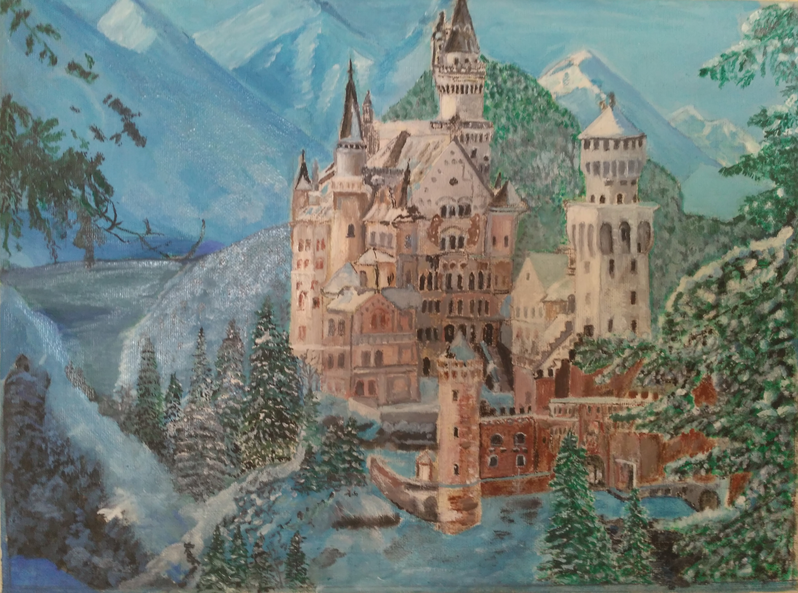

Горы и долины знают тайну...
В холодах, укутанные снегом
Тихо дремлют стены Нойшванштайна,
Сберегая сказку век за веком.
Вздрогнет небо песней вешней птахи,
Теплым ливнем сон с окошек смоя.
Дирижерской палочкой на взмахе
Лебединый камень над весною!
Но порой, окутан грустью странной,
Будто скрыв непрошенные слезы,
Замок погружается в туманы,
Лёгшие меж гор рекой белёсой...
По предгорьям расстилая травы,
У подножий стен вскипев листвою,
Лето, изумрудною оправой,
Обнимает чудо неземное.
В золотую раму ставит осень,
Ветром обмахнув крупинки лета.
Белокрылый замок на утёсе
Загрустит от птичьего фальцета...
Времена срываются в былое...
Упокоен рыцарь нелюдимый,
Нойшванштайн – печальною мечтою,
Безрассудной песней лебединой...
morozova33
